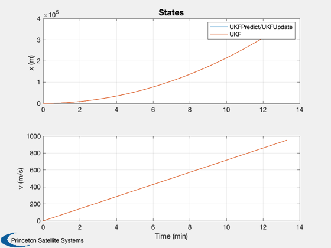
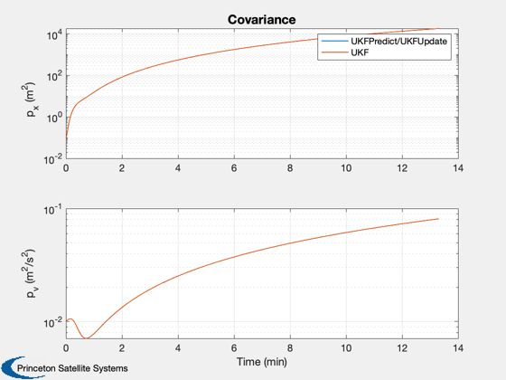

Compares UKF.
This is for a 1 dimensional launch problem with an angle sensor that measures the angle to the launch vehicle. The vehicle is subject to Gaussian random thrust variations. The sensor is subject to Gaussian white noise.
The script compares UKF with the combination of UKFPredict/UKFUpdate.
UKF is contained in one file. The latter requires three different files. They both operate on datastructures but the data structures are slightly different.
The latter uses the matrix form of the unscented transformation.
This script shows that the results are identical, as they should be.
------------------------------------------------------------------------ See also: AngleSensor, RK4, RHSX, KFInitialize, UKF, UKFPredict, UKFUpdate ------------------------------------------------------------------------
%-------------------------------------------------------------------------- % Copyright (c) 2012 Princeton Satellite Systems, Inc. % All rights reserved. % Since version 11. %-------------------------------------------------------------------------- % Clear the datastructures %------------------------- clear u clear d n = 800; dT = 1; sigmaT = 0.01; sigmaTheta = 0.01; d.m = 1; d.t0 = 11; d.g = 9.806; d.b = 1000; d.tNoise = sigmaT; d.noise = sigmaTheta; % Initial state and measurement %------------------------------ x = [0;0]; theta = 0; % Estimation parameters %---------------------- dUKF = d; dUKF.tNoise = 0; dUKF.noise = 0; r = sigmaTheta^2; % Measurement noise covariance q0 = diag([0 sigmaT^2]); % Plant noise covariance p0 = diag([0.1 0.01]); % Allocate memory for the plotting arrays to save time %----------------------------------------------------- xS = zeros(3,n); xF = zeros(4,n); xO = zeros(4,n); % Run the simulation %------------------- for k = 1:n % Measurement %------------ theta = AngleSensor(x,d); % State update %------------- x = RK4( @RHSX, x, dT, 0, d ); % Store for plotting and processing in the UKS %--------------------------------------------- xS(:,k) = [x;theta]; end % Initialize the Unscented Kalman Filter %--------------------------------------- u = KFInitialize( 'ukf','f',@RHSX,'alpha',1,... 'kappa',0,'beta',2,'dT',dT,'fData',dUKF,... 'p',p0,'q',q0,'x',[0;0], 'm',[0;0]); % Notice the different names %--------------------------- d.x = u.m; d.dY = 1; d.rHSFun = @RHSX; d.measFun = @AngleSensor; d.measFunData = dUKF; d.rHSFunData = dUKF; d.rP = q0; d.rM = r; d.sigmaPtAlg = 2; d.alpha = 1; d.kappa = 0; % Should be number of states - 2 d.beta = 2; d.dT = dT; d.p = p0; % This initializes the weights for UKF %------------------------------------- d = UKF('initialize', d ); % UKF %---- t = 0; for k = 1:n % Store for plotting %------------------ xF(:,k) = [u.m;diag(u.p)]; xO(:,k) = [d.x;diag(d.p)]; % UKF %---- u.t = t; u.y.data = xS(3,k); u.y.param.hFun = @AngleSensor; u.y.param.hData = dUKF; u.y.param.r = r; u = UKFPredict( u ); u = UKFUpdate( u ); % Alternative UKF %---------------- d.t = t; d = UKF( 'update', d, u.y.data ); t = t + dT; end % Plot the results %----------------- [t,tL] = TimeLabl((0:(n-1))*dT); Plot2D(t,[xF(1:2,:);xO(1:2,:)], tL, {'x (m)' 'v (m/s)'}, 'States','lin',{'[1 3]' '[2 4]'}) legend('UKFPredict/UKFUpdate','UKF'); Plot2D(t,[xF(3:4,:);xO(3:4,:)], tL, {'p_x (m^2)' 'p_v (m^2/s^2)'},'Covariance','ylog',{'[1 3]' '[2 4]'}) legend('UKFPredict/UKFUpdate','UKF'); %-------------------------------------- 